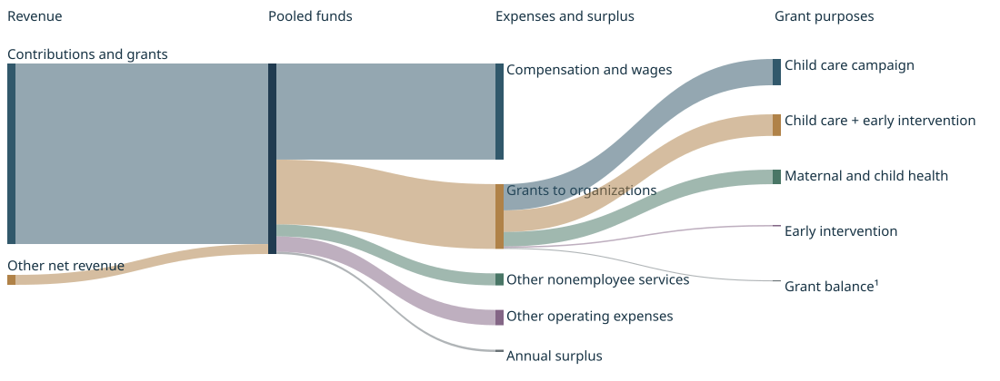

Where PPC’s money went
Pennsylvania Partnerships for Children reported $4.09 million of revenue and $4.04 million of expenses for the year ending December 2025. Its largest expense was staff compensation and wages (51.1%), followed by grants to organizations (34.4%).
From funding to campaign spending
Read left to right. Band width represents dollars. Revenue is pooled because the return does not assign individual donors to individual expenses. The grant branch shows purposes described in Schedule I. Dollars appearing in successive columns are the same dollars.

Read exact amounts in table form
Income
| Classification | FY2025 dollars |
|---|---|
| Contributions and grants | $3,873,262 |
| Other net revenue | $213,599 |
Uses of revenue
| Classification | FY2025 dollars |
|---|---|
| Compensation and wages | $2,061,777 |
| Grants to organizations | $1,390,317 |
| Other nonemployee services | $257,531 |
| Other operating expenses | $328,896 |
| Annual surplus | $48,340 |
How organizational grants were described
| Classification | FY2025 dollars |
|---|---|
| Child care campaign | $563,602 |
| Child care + early intervention | $463,495 |
| Maternal and child health | $311,367 |
| Early intervention | $30,000 |
| Grant balance¹ | $21,853 |
¹ The eleven amounts itemized in the archived Schedule I sum to $1,368,464. The remaining $21,853 reconciles them to Part IX’s $1,390,317 grant total. Its recipients and purposes remain unassigned here. The surplus is revenue left after expenses.
Schedule C reports $123,771 in direct lobbying, already included in expenditures. The government-grants line is blank. The filing reports contributions on the other-contributions line. Tax exemption, deductible donations and direct government grants have different fiscal meanings.
Download the chart data · Filed 2025 return and schedules · Source archive and checksums
What did the work produce?
Public work PPC reported in 2025
In its tax return, PPC describes producing reports on children’s health coverage, early care, career and technical education, and students in foster care. It also reports maintaining a public database with more than 100 child well-being indicators and sending policy updates to a distribution list of nearly 10,000. These are research and outreach activities. The filing gives no readership figures or estimate of how many children gained services because of them. Form 990, Part III, lines 4a–4c.
What did specific grants buy?
The largest listed award, $331,257 to the Pennsylvania Association for the Education of Young Children, supported child care and early intervention campaigns. Children First received $235,382 for a child care campaign, and Maternity Care Coalition received $211,367 for a maternal and child health campaign. Schedule I identifies the purposes. It gives no count of additional child care places, completed referrals or health visits attributable to these awards. FY2025 grant schedule.
What do independent records say about children?
Health insurance. PPC reports coalition advocacy around Pennsylvania’s 1992 CHIP law. The state recorded about 167,000 children and teens enrolled in December 2024. That is a statewide coverage measure from the year before these expenses. PPC’s historical timeline · State CHIP report.
Preschool. An independent UNC evaluation associated Pre-K Counts participation with stronger kindergarten vocabulary and math scores than those of comparison children who had no center-based early education. The observational study evaluated the preschool program. PPC’s contribution to those outcomes remains unquantified. Read the evaluation and methods.
To assess the return on a campaign grant, look for the grantee’s agreed target, its year-end deliverables, the resulting policy decision, and a follow-up measure such as additional staffed places filled. The reviewed records establish funding and some published work. They leave that final link to child outcomes open.
What the reports actually propose
In their May 2025 foster-care education report, PPC and the Education Law Center propose a statewide process for deciding where a child attends school after a placement change. They specify a decision maker, deadlines, temporary schooling while a placement is pending and an appeal route. They also ask the state to publish how often children change schools. A county could track days of instruction missed per move before and after adoption, alongside the staffing and transportation costs. The report establishes the proposal; adoption, cost and subsequent results need their own records.
Other proposals explicitly seek larger public appropriations. One example in the roadmap is an increase in the state career and technical education subsidy and equipment grants. A fiscal review could compare dollars per additional training seat, completion rates and credentials earned. The organization’s campaign expenses alone cannot answer those questions.
Archived recommendations, pp. 15–16 · Policy roadmap · PPC reports library
What the reports actually propose
In their May 2025 foster-care education report, PPC and the Education Law Center propose a statewide process for deciding where a child attends school after a placement change. They specify a decision maker, deadlines, temporary schooling while a placement is pending and an appeal route. They also ask the state to publish how often children change schools. A county could track days of instruction missed per move before and after adoption, alongside the staffing and transportation costs. The report establishes the proposal; adoption, cost and subsequent results need their own records.
Other proposals explicitly seek larger public appropriations. One example in the roadmap is an increase in the state career and technical education subsidy and equipment grants. A fiscal review could compare dollars per additional training seat, completion rates and credentials earned. The organization’s campaign expenses alone cannot answer those questions.
Archived recommendations, pp. 15–16 · Policy roadmap · PPC reports library
Where the directors work
PPC lists 19 directors. Each slice counts directors by the main activity of their listed employer. This is a November 24, 2026 roster snapshot, separate from the 2025 financial reporting period.
| Employer sector | Seats | Share |
|---|---|---|
| Nonprofits and associations | 5 | 26.3% |
| Health care providers | 3 | 15.8% |
| Higher education | 3 | 15.8% |
| Professional services | 3 | 15.8% |
| Banking | 2 | 10.5% |
| Health insurance | 2 | 10.5% |
| State government | 1 | 5.3% |
The categories are our classifications. University medical faculty count under higher education. Hospitals and clinics count under health care regardless of nonprofit status. The nonprofit and association group includes foundations, advocacy, community organizations and the state business chamber. Each board seat has equal weight in this chart.
See the employer behind each classification
Nonprofits and associations
- Ronnie Bloom · Stoneleigh Foundation
- Jessica Brubaker · Keystone Kidspace
- Kari King · Pennsylvania Partnerships for Children
- Marianne A. Fray · Maternity Care Coalition
- Alex Halper · PA Chamber of Business and Industry
Health care providers
- Manal El Harrak · Sadler Health Center
- George Dalembert · Children’s Hospital of Philadelphia
- Jon Rubin · Penndel Mental Health Center
Higher education
- Deborah Moss · University of Pittsburgh
- Lucy Johnston-Walsh · Penn State Dickinson Law
- Ian Paul · Penn State College of Medicine
Professional services
- Lona Cooper · Deloitte Consulting LLP
- Charlie Lyons · Clear Point Communications
- Jayson R. Wolfgang · Buchanan Ingersoll & Rooney PC
Banking
- David Patti · Customers Bank
- Ellen Kyzer · PNC Bank
Health insurance
- Kimberly Kockler · Independence Blue Cross
- Mike Yantis · Highmark, Inc.
State government
- Greg Rowe · Pennsylvania Office of the Attorney General